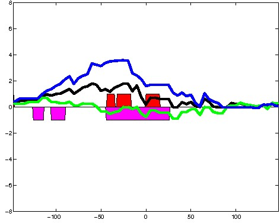
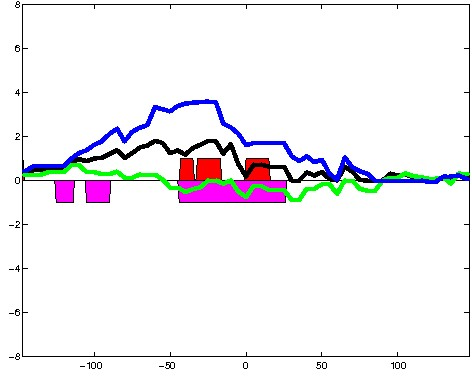
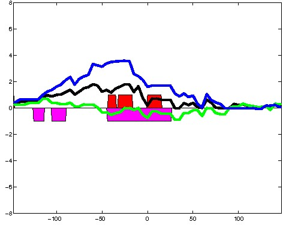

K562 Activating DNase matched - State 4:PromP (n=67)
K562 Activating DNase matched - State 4:PromP (n=67)
[
See group descriptions
]

; picked in K562 (state 4:PromP, DNase); matched; chr1:3,229,749-3,230,043 (295bp)")
; picked in K562 (state 4:PromP, DNase); matched; chr18:60,732,449-60,732,743 (295bp)")
; picked in K562 (state 4:PromP, DNase); matched; chr9:116,327,609-116,327,903 (295bp)")
; picked in K562 (state 4:PromP, DNase); matched; chr2:130,635,009-130,635,303 (295bp)")
; picked in K562 (state 4:PromP, DNase); matched; chr17:73,512,389-73,512,683 (295bp)")
; picked in K562 (state 4:PromP, DNase); matched; chr9:34,458,469-34,458,763 (295bp)")
; picked in K562 (state 4:PromP, DNase); matched; chr7:3,083,429-3,083,723 (295bp)")
; picked in K562 (state 4:PromP, DNase); matched; chr14:94,492,509-94,492,803 (295bp)")
; picked in K562 (state 4:PromP, DNase); matched; chr3:13,703,849-13,704,143 (295bp)")
; picked in K562 (state 4:PromP, DNase); matched; chr1:27,324,169-27,324,463 (295bp)")
; picked in K562 (state 4:PromP, DNase); matched; chr15:91,834,949-91,835,243 (295bp)")
; picked in K562 (state 4:PromP, DNase); matched; chr3:197,268,749-197,269,043 (295bp)")
; picked in K562 (state 4:PromP, DNase); matched; chr9:37,027,669-37,027,963 (295bp)")
; picked in K562 (state 4:PromP, DNase); matched; chr11:12,387,789-12,388,083 (295bp)")
; picked in K562 (state 4:PromP, DNase); matched; chr2:102,760,129-102,760,423 (295bp)")
; picked in K562 (state 4:PromP, DNase); matched; chr1:183,573,369-183,573,663 (295bp)")
; picked in K562 (state 4:PromP, DNase); matched; chr19:19,651,989-19,652,283 (295bp)")
; picked in K562 (state 4:PromP, DNase); matched; chr1:205,819,189-205,819,483 (295bp)")
; picked in K562 (state 4:PromP, DNase); matched; chr7:4,922,049-4,922,343 (295bp)")
; picked in K562 (state 4:PromP, DNase); matched; chr19:42,538,949-42,539,243 (295bp)")
; picked in K562 (state 4:PromP, DNase); matched; chr2:45,878,089-45,878,383 (295bp)")
; picked in K562 (state 4:PromP, DNase); matched; chr9:130,504,229-130,504,523 (295bp)")
; picked in K562 (state 4:PromP, DNase); matched; chr6:47,277,609-47,277,903 (295bp)") 

; picked in K562 (state 4:PromP, DNase); matched; chr10:88,699,209-88,699,503 (295bp)")
; picked in K562 (state 4:PromP, DNase); matched; chr4:13,550,629-13,550,923 (295bp)")
; picked in K562 (state 4:PromP, DNase); matched; chr10:21,661,869-21,662,163 (295bp)")
; picked in K562 (state 4:PromP, DNase); matched; chr19:54,402,029-54,402,323 (295bp)")
; picked in K562 (state 4:PromP, DNase); matched; chr19:4,597,749-4,598,043 (295bp)")
; picked in K562 (state 4:PromP, DNase); matched; chr1:220,942,469-220,942,763 (295bp)")
; picked in K562 (state 4:PromP, DNase); matched; chr9:79,792,169-79,792,463 (295bp)")
; picked in K562 (state 4:PromP, DNase); matched; chr9:37,395,729-37,396,023 (295bp)")
; picked in K562 (state 4:PromP, DNase); matched; chr16:3,053,869-3,054,163 (295bp)")
; picked in K562 (state 4:PromP, DNase); matched; chr3:58,571,089-58,571,383 (295bp)")
; picked in K562 (state 4:PromP, DNase); matched; chr3:46,607,669-46,607,963 (295bp)")
; picked in K562 (state 4:PromP, DNase); matched; chr6:139,350,729-139,351,023 (295bp)")
; picked in K562 (state 4:PromP, DNase); matched; chr21:47,517,849-47,518,143 (295bp)")
; picked in K562 (state 4:PromP, DNase); matched; chr1:32,180,769-32,181,063 (295bp)")
; picked in K562 (state 4:PromP, DNase); matched; chr5:188,729-189,023 (295bp)")
; picked in K562 (state 4:PromP, DNase); matched; chr5:157,375,809-157,376,103 (295bp)")
; picked in K562 (state 4:PromP, DNase); matched; chr16:89,282,649-89,282,943 (295bp)")
; picked in K562 (state 4:PromP, DNase); matched; chr10:72,972,089-72,972,383 (295bp)")
; picked in K562 (state 4:PromP, DNase); matched; chr1:228,528,769-228,529,063 (295bp)")
; picked in K562 (state 4:PromP, DNase); matched; chr15:72,460,749-72,461,043 (295bp)")
; picked in K562 (state 4:PromP, DNase); matched; chrX:46,771,629-46,771,923 (295bp)")
; picked in K562 (state 4:PromP, DNase); matched; chr6:158,958,109-158,958,403 (295bp)")